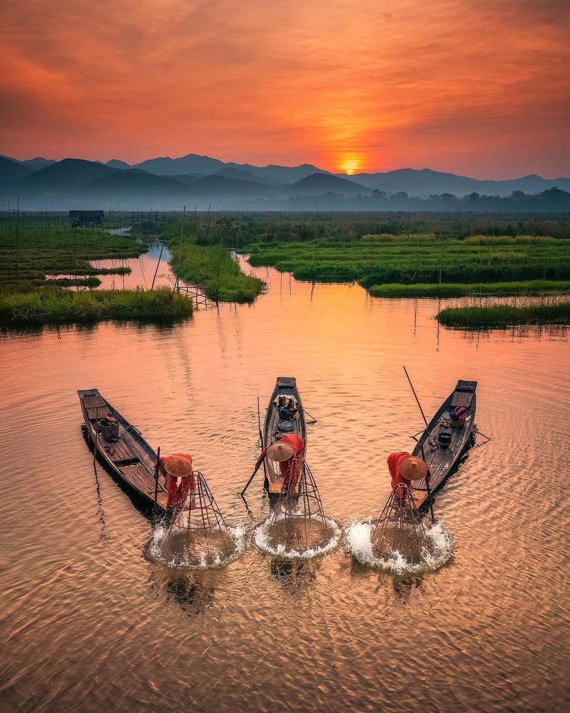
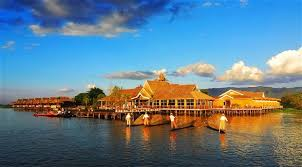
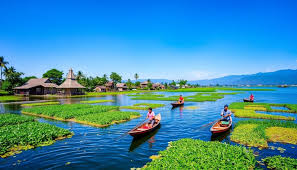

Inle Lake is a famous lake in Shan state, Myanmar. People live in houses built on the water and fishermen row their boats using one leg. There are floating gardens where vegetables are grown. Because of its unique culture, Inle Lake is a popular tourist attraction.
အင်းလေးကန်သည် ရှမ်းပြည်နယ် တွင် တည်ရှိသော နာမည်ကြီး ကန်တစ်ခု ဖြစ်သည်။ ဒေသခံများသည် ရေပေါ်အိမ်များတွင် နေထိုင်ကြပြီး ခြေထောက်ဖြင့် လှော်တက်၍ လှေစီးငါးဖမ်းကြသည်။ ကန်ပေါ်တွင် ရေပေါ်လယ်ယာများရှိပြီး ဟင်းသီးဟင်းရွက်များ စိုက်ပျိုးကြသည်။ အင်းလေးကန်သည် ယဉ်ကျေးမှုထူးခြားမှုများကြောင့် ခရီးသွားများ အလွန်နှစ်သက်သော နေရာ ဖြစ်သည်။

